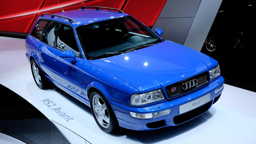
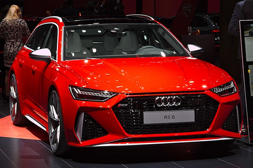

Audi RS2

Audi RS 2 — спортивный автомобиль совместной разработки Audi AG и Porsche, выпускавшийся подразделением quattro GmbH (ныне Audi Sport GmbH) на платформе Audi 80 (B4) в городе Неккарзульм, Германия. Audi RS 2 Avant является первым автомобилем спортивной серии Audi RS. Стоимость автомобиля в 1994 году составляла £45 705. На два года ранее был выпущен спортивный Audi S2 Coupe.
Подробно
Audi RS6

Audi RS 6 — спортивный автомобиль выпускаемый подразделением Audi Sport GmbH (ранее quattro GmbH) на платформе Audi A6. Автомобиль выпускается в двух типах кузова, седан и универсал (Avant). Существует менее мощная спортивная версия Audi S6.
Первое поколение
Audi RS 6 (C5) выпускался с 2002 по 2004 год. Двигатель V8 4,2 л, 450 л. с. Максимальная скорость 250 км/ч. Разгон 0-100 км/ч равен 4,9 секунды. Вес 1840 кг (седан), 1865 кг (Avant).
RS 6 Avant (plus) 480 л. с. Максимальная скорость 280 км/ч. Разгон 0-100 км/ч равен 4,4 секунды. Вес 1880 кг.

.png)
Второе поколение
Audi RS 6 (C6) выпускался с 2008 по 2010 год. Двигатель V10 5,0 л, позаимствованный у Lamborghini Gallardo 580 л. с. Максимальная скорость 250 км/ч. (303 км/ч. plus) Разгон 0-100 км/ч равен 4,5 секундам. Вес 1985—2025 кг.
Audi RS 6 седан дважды установил рекорд скорости на льду на шинах Nokian со снятым ограничителем скорости, в марте 2011 года развив скорость 331,61 км/ч на Ботническом заливе. В 9 марта 2013 года побил собственный рекорд, развив 335,7 км/ч.

.png)
Третье поколение
Audi RS 6 (C7) выпускается с 2013 года только в кузове универсал. В 2015 был произведён рестайлинг. Двигатель V8 4,0 л 560 л. с. Максимальная скорость 250 / 280 / 305 км/ч (опционально). Вес 2025 кг.
RS 6 Avant performance — версия с увеличенной мощностью до 605 л. с., разгон сокращён до 3,7 сек.
RS 6 Avant performance Nogaro Edition — специальная версия тиражом в 150 единиц, выпущенная в честь Audi RS 2 Avant, модифицированная Abt Sportsline и исполненная в цвете Nogaro Blue. Мощность увеличена до 705 л. с. Максимальная скорость 320 км/ч.

Четвёртое поколение
Audi RS 6 (C8) был показан в августе 2019 года, двигатель V8 4,0 мощностью 600 л. с. 800 Нм, с технологией «мягкого гибрида». Разгон 0-100 км/ч равен 3,6 секундам.Максимальная скорость 250 / 280 / 305 км/ч (опционально).
Подробно
Audi A6
Audi 100, с 1994 года Audi A6, — семейство автомобилей бизнес-класса, выпускающихся под маркой Audi, внутреннее обозначение — «тип C». Премьера Audi 100 состоялась в 1968 году, с августа 1994 года этот модельный ряд носит название А6.В отличие от Audi 80/A4, где переименование совпало с выпуском новой модели, первый А6 представлял собой рестайлинговую версию последнего Audi 100.
Сегодня Audi A6 предлагается в четырехдверной версии с кузовом седан и в пятидверной версии Avant (универсал), ранее выпускались также двухдверные модели, купе и хэтчбек. Спортивная модификация А6 производится под наименованием Audi S6, а наиболее мощная версия A6 производится под наименованием RS6, что расшифровывается как "RennSport".

Скачать